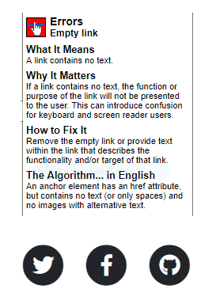
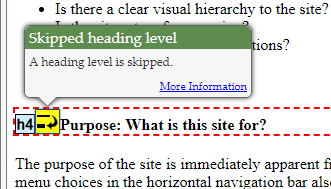
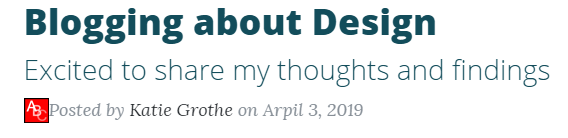
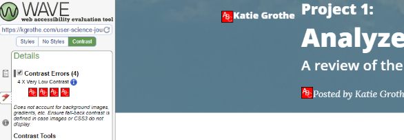

Implementing Accessibility
This week, I audited the accessibility of this User Science Journal and made some changes based on the audits. I also made a few changes to address usability.
Tools Used
Results:
Both tools identified issues with contrast and links. The WAVE tool indicated issues with Headers as well.
Links
The Lighthouse audit indicated that some "Links do not have a discernible name" and WAVE indicated "Empty Link" errors.
This error was on the Twitter, Github, and Facebook icon/links.
 WAVE Empty Link explanation and iconsRevisions:
- Although these currently aren't active links, I added ARIA labels to these links on all the pages of my journal.
Headers
The WAVE audit identified skipped heading levels, and the Lighthouse audit tool recommended manually checking that heading levels were not skipped.
I skipped heading levels on multiple pages, picking what I thought looked best instead of using headers to show level of importance and how the content related to other content.
 WAVE Audit showing skipped header
Revisions:
- Revised headings so that no levels were skipped
- Added a higher-level general heading to each page and also moved some content to better organize the page and show how chunks of content related to each other
- Left resources header on some pages as H6 since it was at the end of the page
Contrast
Low contrast of text against background and some text within the body of the pages was identified as an issue by both the WAVE and Lighthouse audit tools.
- Gray text was used on the index page:
 WAVE Audit showing low contrast on index page
- And where I used blockquotes:
- Low contrast was indicated by the WAVE audit for all the small text that appeared in the background image on every page:
 WAVE audit showing low contrast of text with background image
Revisions:
- Darker text chosen for index page element (and typo corrected!)
- Black text chosen for blockquote element, indenting and larger font size instead of text color to help set content apart
- Larger text size used for navigation elements on posts for weeks 4, 5 and 6
- Solid background used on posts for weeks 5 and 6 (this week)
Usability
To improve usability:
- Renamed posts in the navigation menu
- Used more lists
- Added more white space
Conclusion
- Fixing the empty link and text colors within body of posts changed Lighthouse Audit score from a range 75 (for the index page) to 87 for other pages to 100.
- Fixing the Headers so that none were skipped eliminated style errors in the WAVE audit
- ....
The Bootstrap framework seems mostly helpful as a structure for building an accessible site.
Most of the accessibility issues for the Bootstrap framework resulted from design - color choices for text and contrast between text and background images.
I had the same contrast issues resulting from my own image and color choices.
Better CSS skills would come in handy about now...
I was choosing header sizes on what I thought looked good rather than according to logical structure. Now I realize this could cause confusion for anyone using assistive technology. Using headers in a logical way also forces me to focus more on organization.
Balancing design with accessiblity can be complicated. The site seems visually more appealing with images. Separating the links from the images in the header is a way to keep the images, and make the links accessible. With experience a developer would learn what images and color choices meet accessibility requirements and be able to create a visually appealing site that was also accessible. Some of the discussion this week touched upon this as a challenge for developers.
Resources
Admin. “How Contrast Ratio Pertains to Website Accessibility.” Bureau of Internet Accessibility, www.boia.org/blog/how-contrast-ratio-pertains-to-website-accessibility.